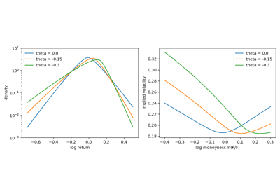
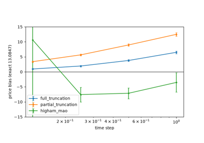

Breakthroughs in Stochastic Volatility#
“The implied volatility surface is the wrong number to put in the wrong formula to get the right price.” – attributed to Riccardo Rebonato
Black and Scholes assumed one constant volatility, and option markets
have disagreed ever since. Implied volatilities vary with the strike
(the smile, and since 1987 the skew) and with the maturity, and the
returns underneath them have fat tails, jumps and volatility that comes
in clusters. Three families of models grew out of this: local
volatility, which makes volatility a function of price and time;
stochastic volatility, which gives it its own random dynamics; and
jumps, which let prices move discontinuously. Their practical success
depended on two further ideas: pricing through the characteristic
function by Fourier inversion, and compact parametrisations of the
smile itself. This chronology traces the ideas behind
financialkit.stochastic_volatility.
1975 – Cox’s Constant Elasticity of Variance#
John Cox, in a Stanford working paper that circulated for twenty years before it was published, let the instantaneous variance of returns be a power of the price. With an elasticity \(\beta < 1\) volatility rises as the price falls, the leverage effect Fischer Black had just reported: a falling share price raises a firm’s debt-to-equity ratio and with it the risk of its equity. The model produces a downward skew in implied volatility from one extra parameter, and Mark Schroder (1989) expressed its option prices through the noncentral chi-square distribution.
Implementation: financialkit.stochastic_volatility.systems.local_vol.cev_price()
implements Schroder’s formula for \(\beta\) below and above 1, and
cev_local_vol()
gives the local volatility. The example checks the formula against an
Euler simulation and plots the skew for several elasticities.
References: J. C. Cox, “Notes on Option Pricing I: Constant Elasticity of Variance Diffusions,” Stanford University working paper (1975), reprinted in Journal of Portfolio Management 23 (1996) 15-17; M. Schroder, “Computing the Constant Elasticity of Variance Option Pricing Formula,” Journal of Finance 44 (1989) 211-219.
1976 – Merton’s Jump Diffusion#
Robert Merton added a Poisson stream of jumps with lognormal sizes to geometric Brownian motion. A jump cannot be hedged by trading the stock continuously, so Black and Scholes’s replication argument breaks down; Merton assumed that jump risk is diversifiable across the market and therefore unpriced. Conditioning on the number of jumps then turns the option price into a Poisson-weighted sum of Black-Scholes prices. Jumps give fat-tailed returns and steep short-dated smiles that flatten with maturity.
Implementation: financialkit.stochastic_volatility.systems.jumps.MertonJumpModel
gives the characteristic function and samples terminal returns, and
merton_jump_price()
sums the series. The example compares the series with simulation, shows
the fat left tail and plots smiles at three maturities.
References: R. C. Merton, “Option Pricing When Underlying Stock Returns Are Discontinuous,” Journal of Financial Economics 3 (1976) 125-144.
1987 – Hull and White’s Stochastic Volatility#
John Hull and Alan White gave the variance its own diffusion. When the variance is independent of the stock, the stock is lognormal conditional on the variance path, with the path’s average variance; the option price is therefore the Black-Scholes price averaged over the distribution of that average, the mixing formula. Hull and White expanded it in a series for lognormal variance. The model explained why deep in- and out-of-the-money options trade above their Black-Scholes values while at-the-money options trade slightly below.
Implementation: financialkit.stochastic_volatility.systems.heston.hull_white_price()
sums the series to third order, and
hull_white_mixing_mc()
computes the mixing integral by simulating variance paths with
financialkit.integrators.gbm_paths(). The example shows where the
series holds and the symmetric smile.
References: J. Hull and A. White, “The Pricing of Options on Assets with Stochastic Volatilities,” Journal of Finance 42 (1987) 281-300.
1990 – Madan and Seneta’s Variance Gamma#
Dilip Madan and Eugene Seneta ran a Brownian motion on a random clock: business time advances by independent gamma-distributed increments, so markets are calm on some days and frantic on others. The resulting variance gamma process is a pure-jump Lévy process with infinitely many small jumps and no diffusion at all. Its returns are symmetric and leptokurtic, with semi-heavy tails, and its density is a closed form in the modified Bessel function. It was one of the first Lévy models fitted to stock returns.
Implementation: financialkit.stochastic_volatility.systems.jumps.VarianceGammaModel
with theta = 0 gives the characteristic function, the Bessel-function
density and sampling by subordination. The example plots the densities
for several clock variances, checks the kurtosis of simulated draws and
shows the symmetric smile.
References: D. B. Madan and E. Seneta, “The Variance Gamma (V.G.) Model for Share Market Returns,” Journal of Business 63 (1990) 511-524.
1993 – Heston’s Square-Root Stochastic Volatility#
Steven Heston chose a variance process that mean-reverts and stays positive, the square-root diffusion of Cox, Ingersoll and Ross, correlated with the stock. Because the model is affine, its characteristic function solves Riccati equations in closed form. Heston wrote the call as the stock times one exercise probability minus the discounted strike times another, each recovered from the characteristic function by one Fourier integral. Negative correlation produces the equity skew and the volatility of variance produces its curvature, which made Heston’s the reference stochastic volatility model.
Implementation: financialkit.stochastic_volatility.systems.heston.HestonModel
uses the “little trap” form of the characteristic function, and
heston_price()
implements the two-probability formula, which reproduces Andersen’s
reference prices. The example simulates paths and shows how the
correlation and the volatility of variance shape the smile.
References: S. L. Heston, “A Closed-Form Solution for Options with Stochastic Volatility with Applications to Bond and Currency Options,” Review of Financial Studies 6 (1993) 327-343; H. Albrecher, P. Mayer, W. Schoutens and J. Tistaert, “The Little Heston Trap,” Wilmott Magazine (January 2007) 83-92.
1994 – Dupire’s Local Volatility#
Bruno Dupire, and independently Emanuel Derman and Iraj Kani with implied trees, showed that the whole surface of European option prices determines a unique diffusion whose volatility depends only on the price and time, and that reproduces every one of those prices. The local volatility is read off the surface with the forward equation for call prices. It became the standard way to price exotics consistently with the vanillas, although its smile dynamics are wrong: it predicts that the smile moves the opposite way to the spot.
Implementation: financialkit.stochastic_volatility.systems.local_vol.dupire_local_vol()
applies the formula to a price grid by finite differences, and
local_vol_paths()
simulates the result through financialkit.integrators.euler_maruyama().
The example recovers the CEV local volatility from CEV prices and
reprices the options by simulation.
References: B. Dupire, “Pricing with a Smile,” Risk 7(1) (1994) 18-20; E. Derman and I. Kani, “Riding on a Smile,” Risk 7(2) (1994) 32-39.
1996 – Bates: Jumps with Stochastic Volatility#
David Bates, studying Deutsche mark currency options around the 1987 crash, found that stochastic volatility could fit long-dated smiles but not short-dated ones, which need jumps. Adding Merton’s lognormal jumps to Heston’s model gave both: the jumps steepen the short end and the stochastic variance the long end. Because the two components are independent, the characteristic function is simply the product of the two, and Fourier pricing carries over unchanged.
Implementation: financialkit.stochastic_volatility.systems.jumps.BatesModel
multiplies the Heston and Merton characteristic functions. The example
compares Heston and Bates smiles at three maturities.
References: D. S. Bates, “Jumps and Stochastic Volatility: Exchange Rate Processes Implicit in Deutsche Mark Options,” Review of Financial Studies 9 (1996) 69-107.
1998 – Madan, Carr and Chang’s Skewed Variance Gamma#
Madan, Carr and Chang gave the variance gamma process a drift \(\theta\) in business time. A negative drift puts more mass in the left tail, so the symmetric Madan-Seneta smile becomes a skew, and the process has three parameters that control volatility, skewness and kurtosis almost separately. They priced European options in closed form and showed that the skewed model fits S&P 500 options far better than Black-Scholes. Fang and Oosterlee later used one of their parameter sets as a benchmark for Fourier methods.
Implementation: financialkit.stochastic_volatility.systems.jumps.VarianceGammaModel
takes the drift theta, includes the martingale correction and gives
the critical moments of the price. The example reproduces Fang and
Oosterlee’s reference prices and shows how \(\theta\) skews the
density and the smile.
References: D. B. Madan, P. P. Carr and E. C. Chang, “The Variance Gamma Process and Option Pricing,” European Finance Review 2 (1998) 79-105.

Madan, Carr and Chang’s skewed variance gamma
1999 – Carr and Madan’s FFT#
Peter Carr and Dilip Madan observed that the call price, as a function of the log strike, is not square integrable, but that damping it by \(e^{\alpha k}\) makes it so, and that the Fourier transform of the damped price is a simple expression in the characteristic function of the log price. A single fast Fourier transform then gives call prices at thousands of strikes at once, for any model with a known characteristic function. It turned Heston, variance gamma and the other Lévy models into practical tools for calibration.
Implementation: financialkit.stochastic_volatility.systems.fourier.carr_madan_fft()
evaluates the integral with scipy.fft.fft() and Simpson weights,
and carr_madan_price()
interpolates the grid. The example checks the grid against
Black-Scholes and scans the damping exponent.
References: P. Carr and D. B. Madan, “Option Valuation Using the Fast Fourier Transform,” Journal of Computational Finance 2(4) (1999) 61-73.
2001 – Lewis’s Single-Integral Formula#
Alan Lewis treated the option payoff and the characteristic function as generalised Fourier transforms, each living on its own strip of the complex plane. Moving the inversion contour to \(\operatorname{Im} u = -\tfrac12\), between the call and the put strips, gives a single real integral whose integrand decays like \(u^{-2}\) for any model. The formula needs no damping parameter and is robust for pure-jump models, where Heston’s two integrals converge slowly.
Implementation: financialkit.stochastic_volatility.systems.fourier.lewis_price()
evaluates the integral with scipy.integrate.quad(). The example
compares its integrand and prices with Heston’s formula, for Heston and
for variance gamma.
References: A. L. Lewis, “A Simple Option Formula for General Jump-Diffusion and Other Exponential Lévy Processes,” working paper (2001); A. L. Lewis, Option Valuation under Stochastic Volatility (Finance Press, 2000).
2002 – Hagan’s SABR Model#
Patrick Hagan, Deep Kumar, Andrew Lesniewski and Diana Woodward showed that local volatility predicts the wrong dynamics for the smile and proposed the stochastic \(\alpha\beta\rho\) model instead, together with a singular-perturbation formula for its Black implied volatility. The formula is explicit, fast and accurate for the strikes that matter, and each parameter has one job: \(\beta\) the backbone, \(\rho\) the skew, \(\nu\) the curvature. SABR became the market standard for interest-rate smiles.
Implementation: financialkit.stochastic_volatility.systems.smile.sabr_implied_vol()
implements Hagan’s formula, and
sabr_calibrate()
fits it with scipy.optimize.least_squares(). The example calibrates
a noisy smile and varies each parameter.
References: P. S. Hagan, D. Kumar, A. S. Lesniewski and D. E. Woodward, “Managing Smile Risk,” Wilmott Magazine (September 2002) 84-108.
2002 – Kou’s Double-Exponential Jumps#
Steven Kou replaced Merton’s normal jump sizes with an asymmetric double exponential: upward jumps at one rate, downward at another. The model reproduces both the asymmetric fat tails of returns and the smile, and because the exponential distribution is memoryless, the overshoot of a barrier is again exponential, so barrier, lookback and American options have analytic solutions. The exponential tails also cap the moments of the price, which ties the model to Lee’s wing formula two years later.
Implementation: financialkit.stochastic_volatility.systems.jumps.KouModel
gives the characteristic function, the critical moments and sampling by
gamma-distributed jump totals. The example reproduces Kou’s published
price and compares exponential with Gaussian jump tails.
References: S. G. Kou, “A Jump-Diffusion Model for Option Pricing,” Management Science 48 (2002) 1086-1101.
2004 – Gatheral’s SVI#
Jim Gatheral, presenting Merrill Lynch’s practice at the Global Derivatives conference in Madrid, introduced the stochastic volatility inspired parametrisation of total implied variance. It is a hyperbola in log-moneyness, whose asymptotes are the straight wings that Lee’s theorem requires, and it is the large-maturity limit of Heston’s implied variance. Five parameters fit equity smiles closely, and later work with Antoine Jacquier gave conditions under which an SVI surface is free of static arbitrage.
Implementation: financialkit.stochastic_volatility.systems.smile.svi_total_variance()
and svi_fit()
evaluate and fit raw SVI, and
durrleman_g()
checks for butterfly arbitrage. The example fits SVI to Heston smiles at
three maturities.
References: J. Gatheral, “A Parsimonious Arbitrage-Free Implied Volatility Parameterization with Application to the Valuation of Volatility Derivatives,” Global Derivatives & Risk Management, Madrid (2004); J. Gatheral and A. Jacquier, “Arbitrage-Free SVI Volatility Surfaces,” Quantitative Finance 14 (2014) 59-71.
2004 – Lee’s Moment Formula#
Roger Lee proved, without assuming any model, that total implied variance grows at most linearly in the log strike, with a slope no greater than 2, and that the exact slope is determined by the number of finite moments of the price. Heavy right tails, with few finite moments, give steep right wings. The result constrains every smile parametrisation and extrapolation, and it reads a model’s tail behaviour straight off its smile.
Implementation: financialkit.stochastic_volatility.systems.smile.lee_wing_slope()
evaluates the formula, and
KouModel.critical_moments
and VarianceGammaModel.critical_moments
supply the moments. The example shows Kou smiles approaching Lee’s
bounds in both wings.
References: R. W. Lee, “The Moment Formula for Implied Volatility at Extreme Strikes,” Mathematical Finance 14 (2004) 469-480.
2008 – Andersen’s Quadratic-Exponential Scheme#
Leif Andersen addressed the practical problem of simulating Heston when the Feller condition fails, as it does in most calibrations, so that the variance often reaches zero. Rather than discretising the SDE, he matched the first two moments of the exact noncentral chi-square transition with a scaled squared Gaussian when the variance is large and with a point mass at zero plus an exponential tail when it is small. Combined with a careful step for the stock, the scheme is nearly unbiased at a few steps per year on test cases where Euler schemes are badly biased.
Implementation: financialkit.stochastic_volatility.systems.simulation.heston_paths()
with scheme="qe" implements the scheme, and
heston_mc_price()
prices with it. The example measures its bias against full truncation on
Andersen’s Case I and shows the atom at zero.
References: L. Andersen, “Simple and Efficient Simulation of the Heston Stochastic Volatility Model,” Journal of Computational Finance 11(3) (2008) 1-42.
2008 – Fang and Oosterlee’s COS Method#
Fang Fang and Kees Oosterlee truncated the density of the log return to an interval set by its cumulants and expanded it in a Fourier cosine series. The series coefficients come straight from the characteristic function, and the payoff’s coefficients are closed form, so a price is a short dot product. For smooth densities the error falls exponentially with the number of terms, which made COS faster than the FFT for most models, and it extends to Bermudan and barrier options.
Implementation: financialkit.stochastic_volatility.systems.fourier.cos_price()
prices puts by the series and calls by parity, with the truncation
interval from truncation_range(),
and cos_density()
recovers densities. The example shows exponential convergence for
Heston and slower convergence for short-dated variance gamma.
References: F. Fang and C. W. Oosterlee, “A Novel Pricing Method for European Options Based on Fourier-Cosine Series Expansions,” SIAM Journal on Scientific Computing 31 (2008) 826-848.
2010 – Lord, Koekkoek and van Dijk’s Full Truncation#
An Euler step can push the square-root variance below zero, and the literature had proposed several repairs: absorbing at zero, reflecting, taking absolute values, or truncating in the diffusion only. Roger Lord, Remmert Koekkoek and Dick van Dijk put them all in one framework and proposed full truncation: let the variance go negative but use its positive part in both the drift and the diffusion. It had the smallest bias of the Euler schemes in their tests and remains the default simple scheme.
Implementation: financialkit.stochastic_volatility.systems.simulation.heston_paths()
with scheme="full_truncation", "partial_truncation" or
"higham_mao" runs the Euler schemes through
financialkit.integrators.euler_maruyama() with correlated increments.
The example compares their biases on Andersen’s Case I.
References: R. Lord, R. Koekkoek and D. van Dijk, “A Comparison of Biased Simulation Schemes for Stochastic Volatility Models,” Quantitative Finance 10 (2010) 177-194.

Lord, Koekkoek and van Dijk’s full truncation